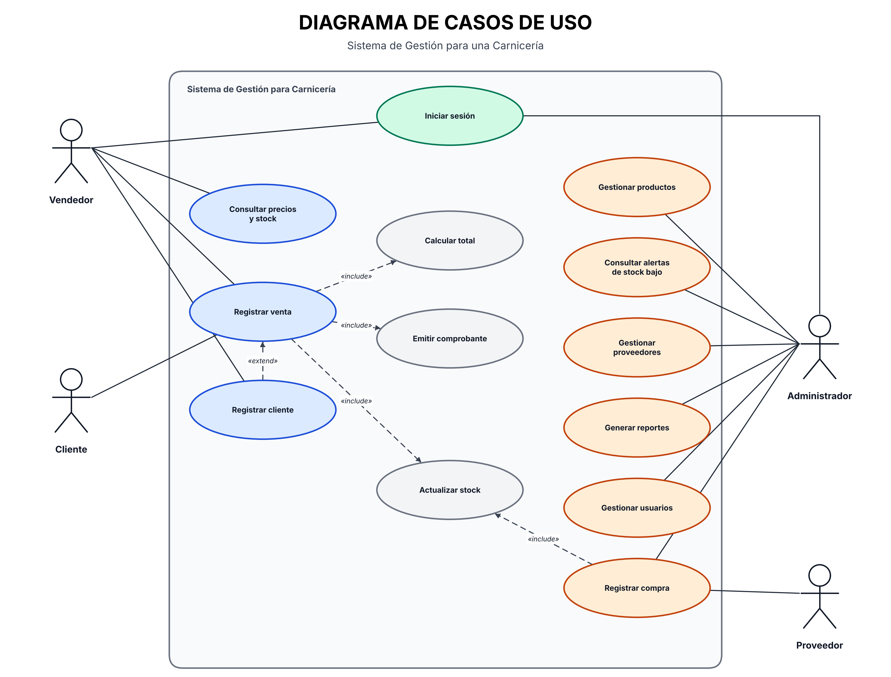
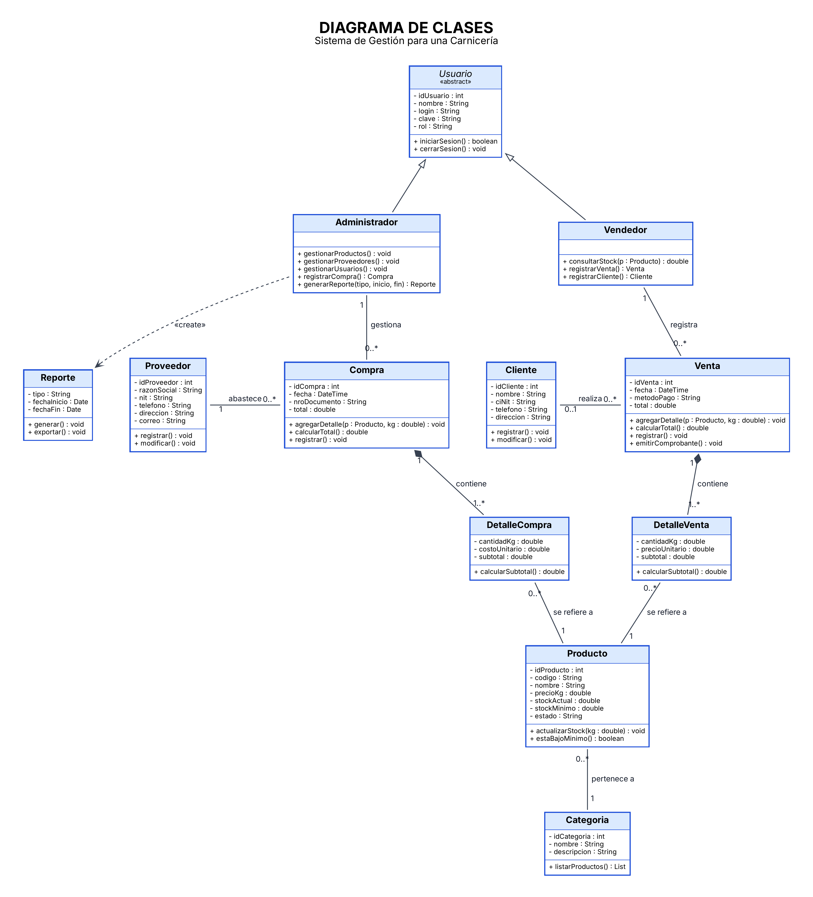
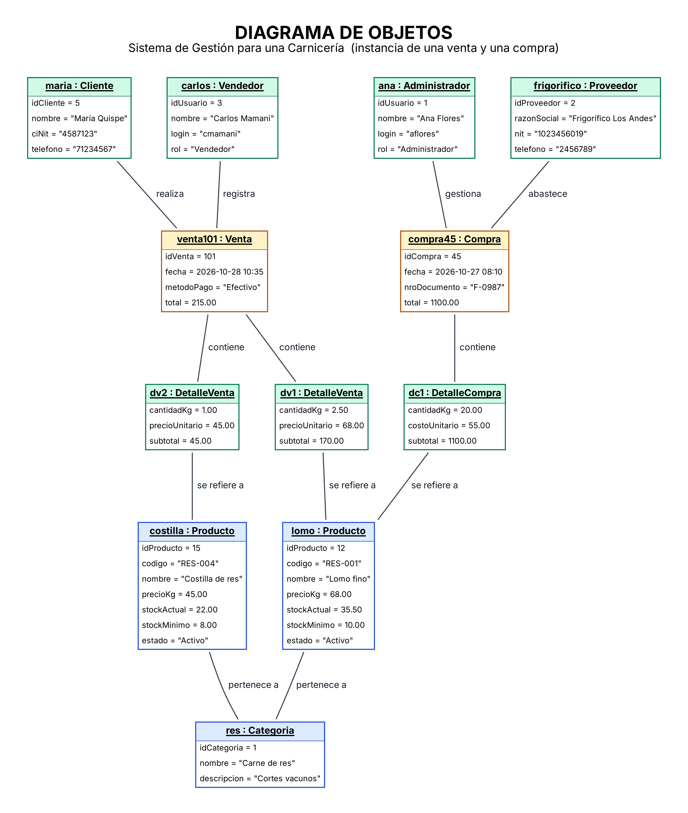
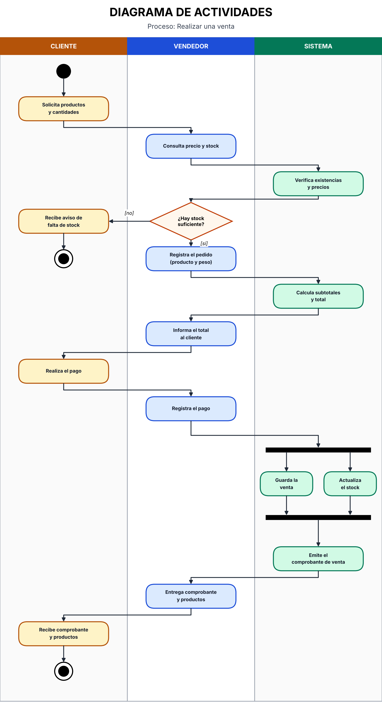
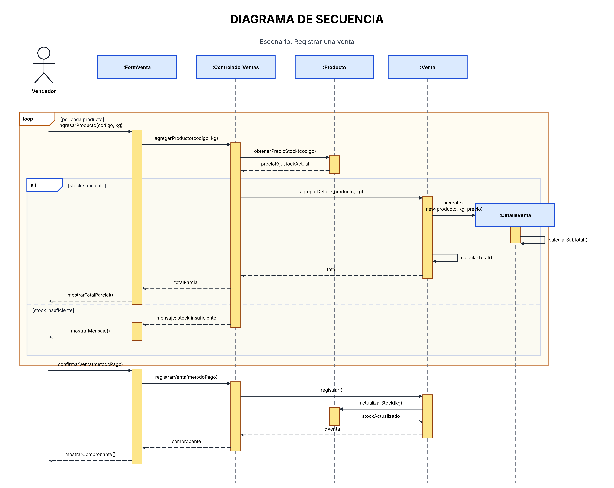
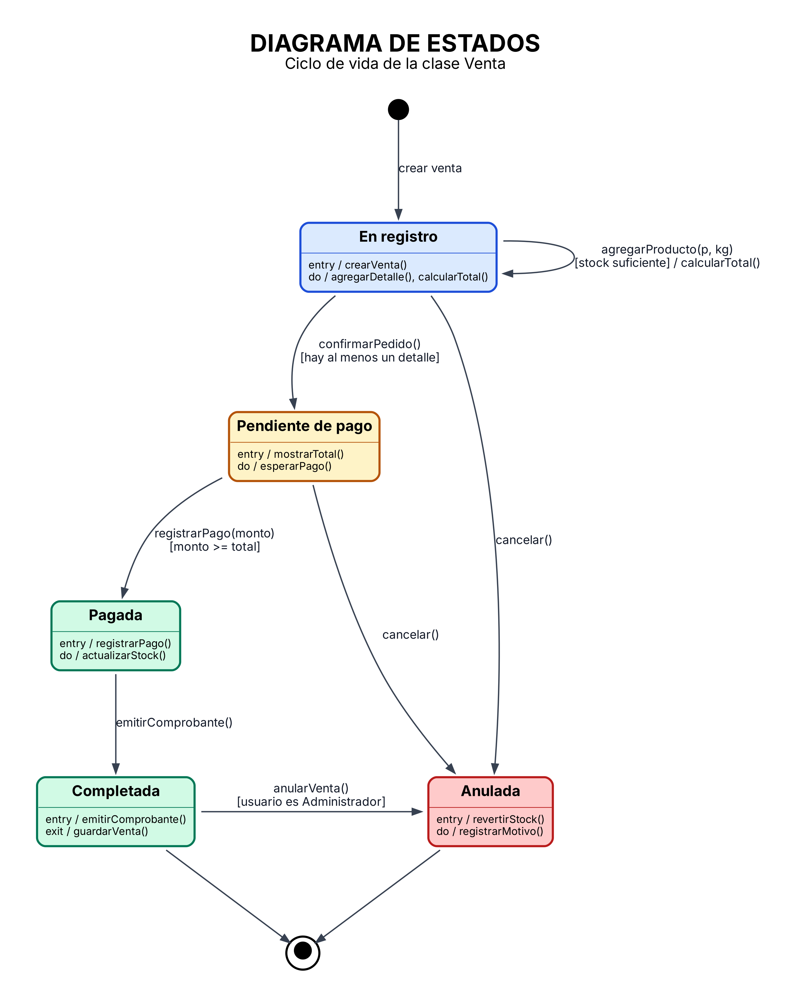
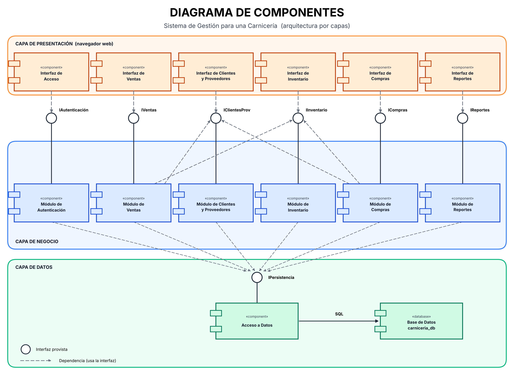
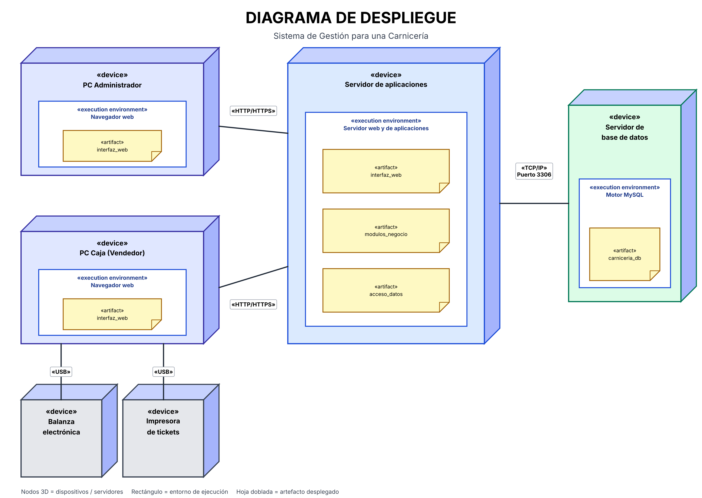

1. Introducción al análisis orientado a objetos
El paradigma orientado a objetos organiza el sistema mediante objetos que poseen atributos y operaciones y colaboran entre sí. UML (Lenguaje Unificado de Modelado) permite representar visualmente la estructura y el comportamiento de la aplicación.
2. Identificación de actores
- Administrador: gestiona productos, inventario, clientes, proveedores y reportes.
- Vendedor: registra ventas y consulta productos disponibles.
- Cliente: solicita productos y recibe información de su compra.
- Proveedor: suministra productos y proporciona información de abastecimiento.
3. Diagrama UML de casos de uso
Muestra las funciones del sistema y la interacción de los actores con ellas, como administrar productos, gestionar inventario, registrar ventas y generar reportes.

4. Diagrama UML de clases
Describe la estructura estática mediante clases, atributos, operaciones y relaciones entre los elementos del negocio.

5. Diagrama UML de objetos
Presenta instancias concretas de las clases y sus vínculos en un momento determinado.

6. Diagrama UML de actividades
Representa el flujo de trabajo de un proceso, sus actividades, decisiones y caminos alternativos.

7. Diagrama UML de secuencia
Muestra el intercambio de mensajes entre actores y objetos en el orden en que se ejecutan las operaciones.

8. Diagrama UML de estados
Representa los estados por los que puede pasar un objeto y los eventos que provocan sus transiciones.

9. Diagrama UML de componentes
Muestra la organización del software en módulos y las dependencias entre los componentes funcionales.

10. Diagrama UML de despliegue
Representa la distribución de los elementos de software en los nodos o entornos de ejecución.
